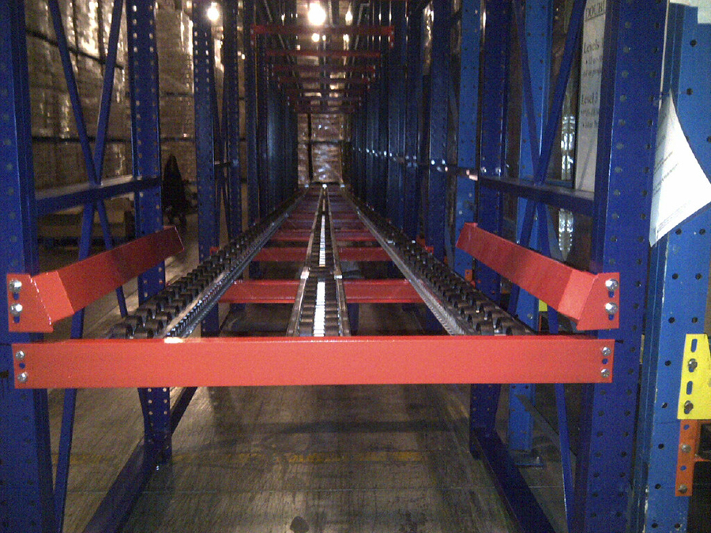
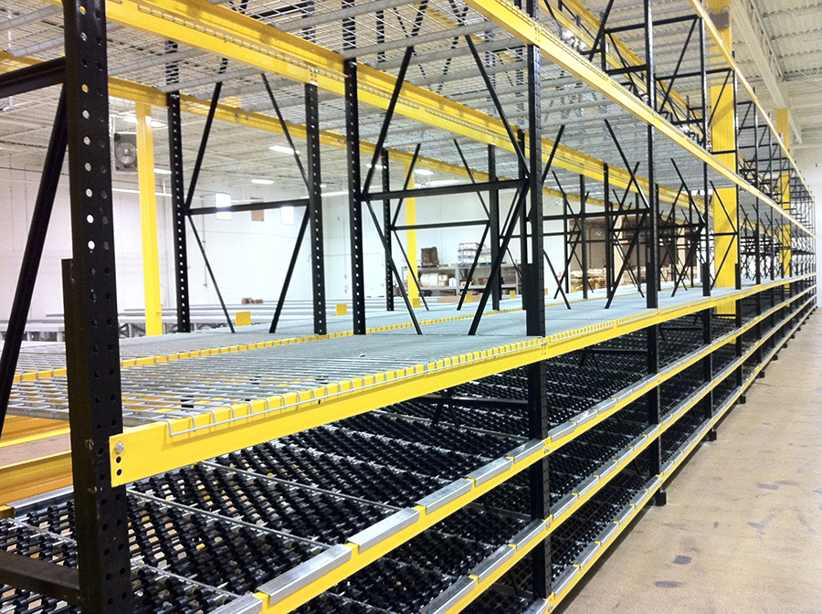
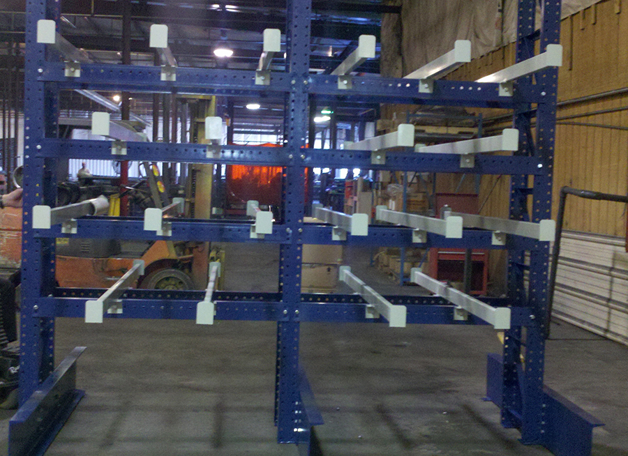
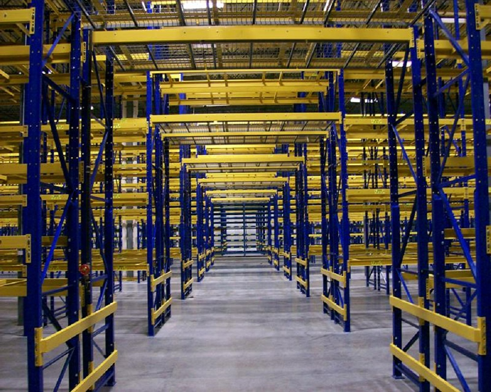

Storage Systems Built Around Your Operation
Plan a safer, denser, and more efficient warehouse with storage solutions selected for your inventory, throughput, equipment, and long-term growth.
Build the Right Foundation for Your Warehouse
The right storage system is not simply the one that holds the most pallets. It must support how inventory enters, moves through, and leaves your facility.
Twin Pick Racks evaluates inventory profiles, picking strategy, throughput, available space, lift equipment, safety requirements, and future growth before recommending a system. Through relationships with Nucor Warehouse Systems, Advanced Storage Products, and Rack Builders Inc. (RBI), we connect each operation with proven technology and experienced manufacturers.
What We Evaluate
- SKU count, pallet dimensions, and inventory velocity
- FIFO, LIFO, batch, and order-picking requirements
- Clear height, column spacing, and usable floor area
- Forklift type, aisle width, and traffic patterns
- Seismic, fire-code, and rack-protection needs
- Expansion, automation, and future capacity goals
Match the System to the Work
Each storage method solves a different operational problem. Twin Pick Racks helps compare capacity, accessibility, selectivity, rotation, and cost before a layout is finalized.

Selective Pallet Rack
Direct access to every pallet makes selective rack the most flexible option for broad SKU ranges, changing inventory, and operations where product accessibility matters more than maximum density.
Best fit: high selectivity and varied inventory
Push-Back Rack
Nested carts or rollers store multiple pallets deep while keeping loading and unloading at the aisle face. This increases density without requiring forklifts to enter the rack structure.
Best fit: multiple pallets per SKU and LIFO rotation
Drive-In & Drive-Through Rack
Forklifts travel within deep storage lanes to maximize pallet positions. Drive-in supports LIFO workflows, while drive-through can support FIFO access from opposite sides.
Best fit: high-density storage with limited SKU variety
Pallet Flow Rack
Gravity-fed lanes move pallets from the loading side to the picking side, separating replenishment from retrieval and supporting efficient first-in, first-out inventory rotation.
Best fit: fast-moving and date-sensitive products
Carton Flow Systems
Cartons automatically advance to the pick face while replenishment occurs from the rear. The result is a compact, organized system for faster case and piece picking.
Best fit: high-volume order-picking operations
Cantilever Rack
Open-front storage provides unobstructed access to lumber, pipe, tubing, furniture, sheet goods, and other long or irregular materials that do not fit conventional pallet rack.
Best fit: long, bulky, or irregular loads
Structural Rack Systems
Hot-rolled steel components provide additional durability and impact resistance for demanding environments, heavy loads, freezer applications, and high-abuse facilities.
Best fit: heavy-duty and high-impact applications
Custom Storage Solutions
When standard rack is not enough, Twin Pick Racks helps develop layouts that coordinate storage with conveyors, mezzanines, safety systems, work platforms, and material-handling equipment.
Best fit: integrated or unusually constrained facilitiesFrom Facility Data to a Buildable Plan
We remain manufacturer-neutral during planning so the recommendation begins with your operational requirements—not a predetermined product.
Assess
Document inventory, workflows, equipment, constraints, safety risks, and growth targets.
Compare
Evaluate storage methods and manufacturers against capacity, access, budget, and lifecycle needs.
Integrate
Coordinate the selected system with material flow, safety infrastructure, installation, and future automation.
Ready to Design a Better Storage System?
Tell us what your warehouse needs to store, move, and prepare for next. Twin Pick Racks will help define the right starting point.